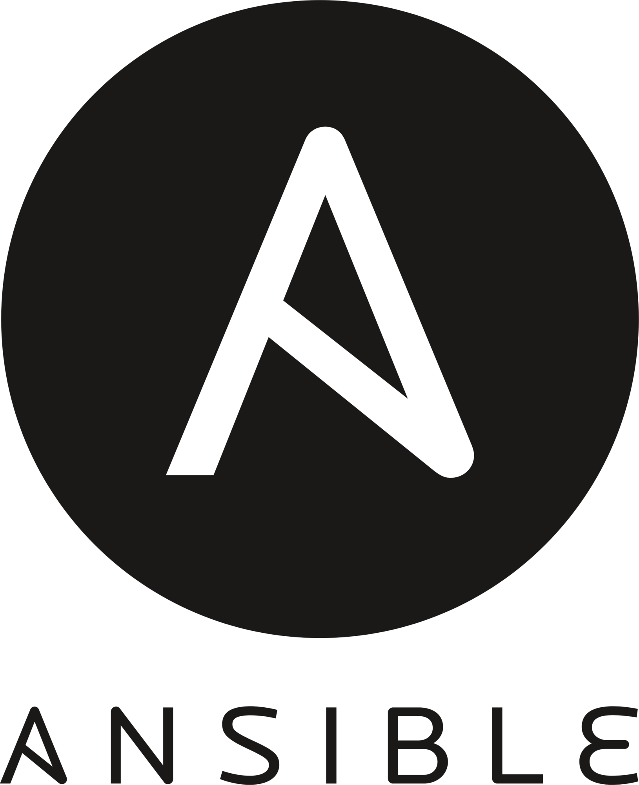
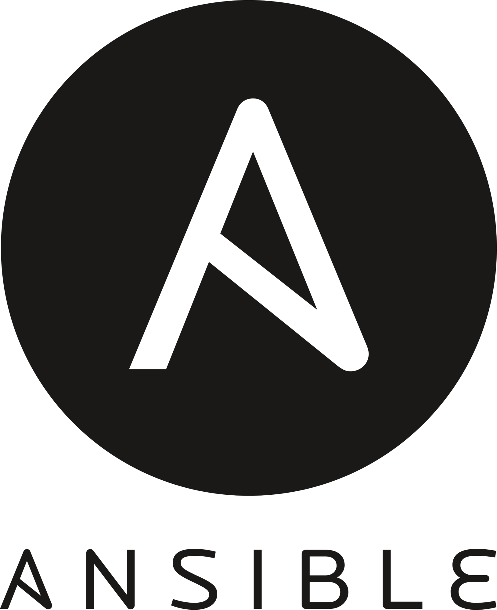

REHOBOTH TECHBUBBLE
Your Vision Our Tech
Your Vision Our Tech
Accelerate your cloud operations and workloads by minimizing costs, increasing efficiency, and speeding up the release management cycle with our DevOps services. Realize better throughput, resilient systems, and faster time to market. We help large and medium enterprises achieve higher efficiency in development and operations, quicker time to market and better quality of software builds with early identification of emerging issues, letting the code be in releasable state always.

 


We automate the entire process pipeline from code generation to production, covering builds, test cases, quality checks, security and more.
Manage inspections, security audits and apply best security practices.

We leverage and integrate your existing tools with our robust ecosystem of open source and licensed tools.
We bridge the DevOps gap through continuous development, continuous integration, continuous testing and continuous deployment.


Design, oversee and control your cloud operational processes.
Manage interactions between your cloud and on-premises environments, servers, storage, network, virtualization software and more.

Ensure your cloud resources are right-sized to serve business workloads in a cost-effective manner.
Custom developed monitoring solutions
Automated infrastructure provisioning
Resiliency
Increased agility
Enhanced quality
Improved innovation
Reduced outages
Scalability

Continuous Development
➜
Continuous Testing
➜
Continuous Integration
➜
Continuous Deployment
➜
Continuous Monitoring
➜
Continuous Optimization
➜The DevOps life cycle is a continuous process that integrates development and operations to deliver software faster, more reliably, and with higher quality. It involves key phases such as planning, coding, building, testing, releasing, deploying, operating, and monitoring-all connected through continuous feedback loops. By automating workflows and encouraging collaboration, the DevOps life cycle ensures rapid delivery, stable environments, and continuous improvement across the entire software development process.